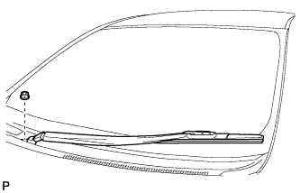
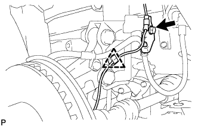
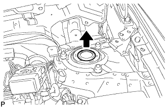
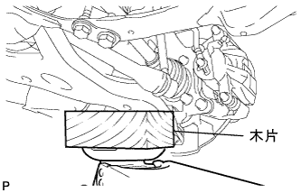
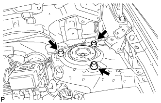

Front Shock Absorber w/ Coil Spring Removal |
| 1. Remove Front Wiper Arm Head Cap |
 |
Remove the 2 front wiper arm head caps.
| 2. Remove Front Wiper Arm & Blade Assembly RH |
 |
Remove the front wiper arm nut and front wiper arm & blade assembly RH.
| 3. Remove Front Wiper Arm & Blade Assembly LH |
 |
Remove the front wiper arm nut and front wiper arm & blade assembly LH.
| 4. Remove Hood to Cowl Top Seal |
 |
Disengage the 7 clips and remove the hood to cowl top seal.
| 5. Remove Front Side Panel Protector NO.1 LH |
 |
Disengage the pin and remove front side panel protector NO.1 LH.
| 6. Remove Cowl Top Ventilator Louver LH |
 |
Disengage the 11 claws and remove the cowl top ventilator louver LH as shown in the illustration.
| 7. Remove Front Side Panel Protector NO.1 RH |
 |
Disengage the pin and remove front side panel protector NO.1 RH.
| 8. Remove Cowl Top Ventilator Louver RH |
 |
Disengage the 5 claws and remove the cowl top ventilator louver RH as shown in the illustration.
| 9. Remove Windshield Wiper Motor & Link Assembly |
 |
Remove the 2 bolts and disconnect the windshield wiper motor & link assembly.
Disconnect the connector and clamp, and remove the windshield wiper motor & link assembly as shown in the illustration.
| 10. Remove Cowl Body Mounting Reinforcement RH |
 |
Remove the 3 bolts and remove the cowl body mounting reinforcement RH from the cowl top panel outer.
| 11. Remove Cowl Top Panel Outer |
 |
Disconnect the windshield deicer wire harness connector and disengage the 3 clamps, and detach them from the cowl top panel outer. (w/ Cold Area Specification)
 |
Disengage the clamps of the heater air duct splash shield seal No.2 and water guard plate RH, and bend each as shown in the illustration.
 |
Remove the 8 bolts and the cowl top panel outer.
| 12. Remove Front Tire |
| 13. Disconnect Front Stabilizer Link Assembly LH |
 |
Remove the nut and disconnect the front stabilizer link assembly LH from the front shock absorber w/ coil spring.
| 14. Disconnect Speed Sensor Front LH |
 |
Remove the bolt and clamp, and disconnect the speed sensor FR LH.
| 15. Disconnect Front Flexible Hose NO.1 |
 |
Remove the bolt and disconnect front brake flexible hose No.1.
| 16. Remove Front Suspension Support Dust Cover LH |
 |
Remove the front suspension support dust cover LH.
| 17. Remove Front Shock Absorber w/ Coil Spring |
 |
Loosen the front suspension support to front shock absorber nut LH of the front shock absorber.
 |
Support the front axle with a jack and wooden block.
 |
Remove the 2 bolts and 2 nuts, and disconnect the front shock absorber w/ coil spring (lower side) from the steering knuckle.
 |
Remove the 3 nuts and remove the front shock absorber w/ coil spring.